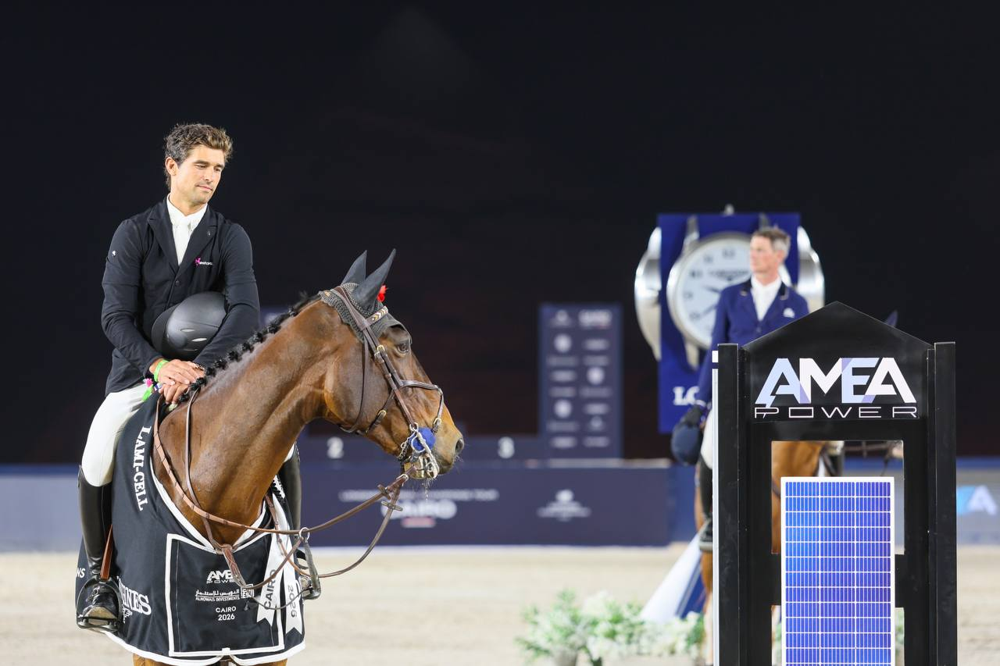

Bettendorf y Qwando van de Rispen ganan la GCL - First Competition de 1,60 m en El Cairo
El luxemburgués Victor Bettendorf y Qwando van de Rispen se impusieron sin faltas en la prueba de 1,60 m que abrió el Longines Global Champions Tour of Cairo, de categoría CSI5*.

Victor Bettendorf firmó el mejor crono de la GCL - First Competition con Qwando van de Rispen: 0 puntos y 72,16 s, según la clasificación oficial. Los tres primeros cerraron sus recorridos sin penalizaciones, de modo que el cronómetro decidió el orden del podio.
La segunda plaza fue para Sophie Hinners (Alemania) con Iron Dames Kaleni Jo, en 73,79 s. Simon Delestre (Francia) y Gatsby du Tillard fueron terceros, con 74,72 s.
La jornada del 22 de octubre incluyó otra prueba de 1,60 m, la GCL - Individual Competition presented by QNB. La ganó Christian Kukuk (Alemania) con Checker 47, sin faltas y en 68,50 s. Max Kühner (Austria) fue segundo con Vivo de Muze PS, también con 0 puntos, en 72,91 s. Emanuele Gaudiano (Italia) completó el podio con Chabrello PS. Su tiempo de 69,61 s fue más rápido que el de Kühner, pero los 4 puntos que sumó lo dejaron en tercera posición.
El Longines Global Champions Tour of Cairo se celebra en El Cairo (Egipto) hasta el 24 de octubre.
Todo sobre Longines Global Champions Tour of Cairo →
Por Lucía Valdeolmos